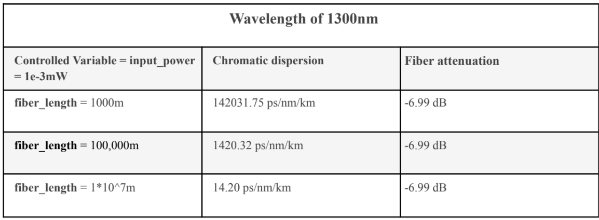
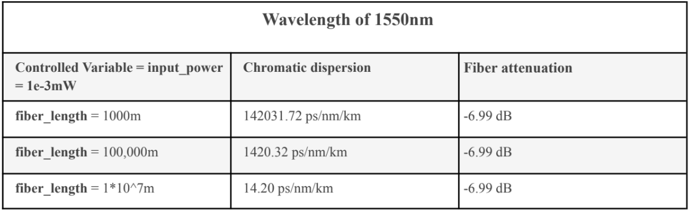
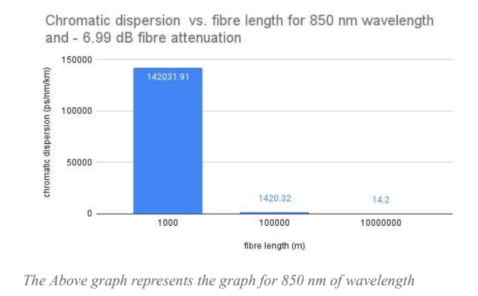
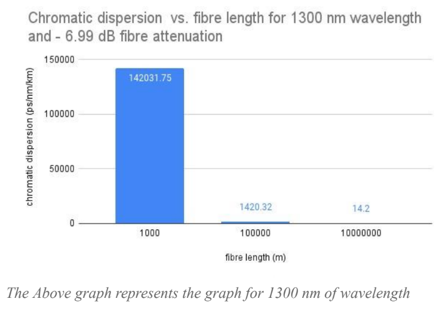
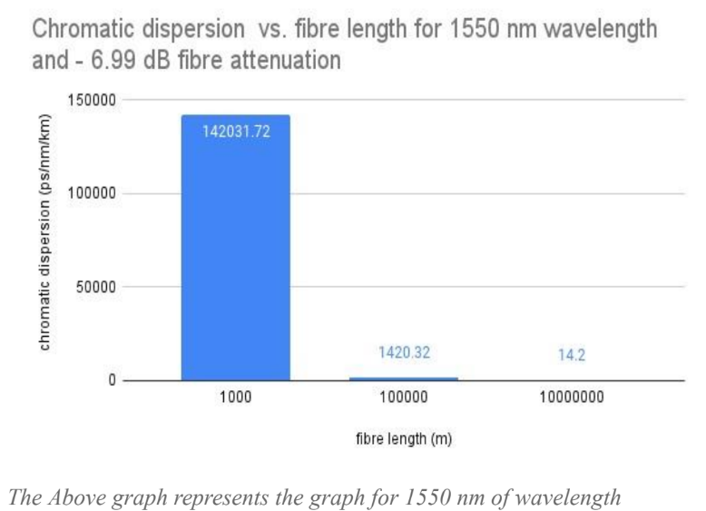

DOCUMENT
PDF Document ( We would suggest you to view this as well ) : GROUP 4 COMPUTER SCIENCE
What is Optical Fiber?

Advantages of optical fibers:
- •Thin and non-flammable
- •Economical and cost-effective
- •Less power consumption
- •Excellent data privacy
- •Less signal degradation
Disadvantages of optical fibers:
- •High cost
- High light power emitting sources are expensive
- • First way that data loss while transferring data can happen is by Intrinsic Fiber Core Attenuation. This
refers to problems in the inside of the optic fiber. The first way this can happen is through light absorption.
This is when the materials of the optic fiber absorb the light that is carrying the data. This is then converted
to heat because of molecular resonance as well as wavelength impurities. Another example of Intrinsic
Fiber Core Attenuation is scattering. This refers to light not moving in a straight path but rather in a very
random motion. Some of the light continues to travel in a straight path but the others will just forever be
bouncing by hitting the internal surface of the fiber.
- • The second way data loss while transferring data can happen is Extrinsic Fiber Attenuation. This refers to
external problems that can affect. This also comes under 2 ways. First one being bend loss. This refers to
the mishandling of the optical fiber causing it to bend. Micro bending refers to a small bend while macro
bending refers to a large-scale bending. The second way of Extrinsic Fiber Attenuation happens with Fiber
Optic Splicing. This refers to the joining of 2 optical fibers with the use of heat.
Experiment for Data Loss
- •Laptop–2
- •Fiber Optic Splicer or Hub–1
- •Optical to Ethernet converter and vise-versa–2
- •Oscilloscope-1
- •optical fiber as per required length.
The HUB where the Optic fiber is connected to acts as a data splicer like mentioned it splices the light received and sends it to the other ports making the light less intense, we can also bend the optic fiber slightly now you can measure this signal using an oscilloscope, then we can measure initial signal strength of the optical fiber before it reaches the HUB or before it was bent. We can now see a slight difference in signal strength. Now we can go forward and do the same test with fiber optic spools ranging from 1 Km, 10Km and 10,000 Km lengths. We repeat the same experiment and compare the values with each other so we can figure out how the length
also is a factor in time and data loss. We will be using a calculation algorithm for this because it's not easier to carry it out in real life, Fiber lengths are exceptionally costly, also having many kilometers of cables inside a small room may not be practical and there would be multiple physical errors which we may or may not find, causing us to get incorrect data.
Calculation Algorithm
Source code: https://github.com/eccentricnethra/MATLAB-Opticfibre-sim
How to use the code: MATLAB | Simulate Data Loss in Fibre optics
Data Collection from the algorithm


We can Analyze it better and make it easier for us to visualize these sets of data using the use of graphs, Here are the graphs for the following tables!


Analysis and Evaluation
Limitations
Conclusion
References:
[ 01 ] “How Does Light Travel Through Optical Fibers? | CircuitBread.” CircuitBread, 9 Sept. 2021, how-does-light-travel-through-optical-fibers.
[ 02 ] Paschotta, Rüdiger. “Optical Data Transmission, Explained by RP Photonics Encyclopedia; Optical Fiber Communications, Free-Space Transmission, Data, Links.” RP Photonics - Digital Marketing, Software and Technical Consulting in Photonics, Laser Technology, Fiber Optics, Nonlinear Optics, RP Photonics AG, 8 Oct. 2022, optical_data_transmission.
[ 03 ] “Port Expand - Practically Networked.” Practically Networked, port-expand. Accessed 18 Mar. 2023.
[ 04 ] Trezise, Shaun. “Understanding Optical Loss in Fiber Networks - and How to Tackle It.” PPC Broadband | Solutions for Broadband and Wireless Networks, PPC Broadband Ltd, 17 Aug. 2016
[ 05 ] CFI Education Inc. “Data Loss.” Corporatefinanceinstitute, data-loss. Accessed 18 Mar. 2023.
[ 06 ] Gawade, Shalija B., and Suresh B. Mer. “Testing and Loss Measurement Techniques in Optical FIBER for Healthy Optical FIBER Communication.” Iosrjournals, Vol.10Issue3/Version-1/H010315456.pdf. Accessed 18 Mar. 2023.
[ 07 ] Gui, Alice. “Understanding Losses in Optical Fiber.” Fiber-Optic-Tutorial, 24 Dec. 2015, understanding-losses-fiber-optic.
[ 08 ] “How Does Light Travel Through Optical Fibers?” Circuitbread, how-does-light-travel-through-optical-fibers. Accessed 18 Mar. 2023.
[ 09 ] “Insertion Loss.” Flukenetworks, cable-testing-101-insertion-loss-matters-fiber-and-copper. Accessed 18 Mar. 2023.
[ 10 ] “OPTICAL FIBER LOSS AND ATTENUATION.” ..Fiberoptics4sale.Com, Optical-fiber-loss-and-attenuation. Accessed 18 Mar. 2023.
[ 11 ] “Understanding Optical Loss in Fiber Networks - and How to Tackle It.” Ppc-Online, understanding-optical-loss-in-fiber-networks-and-how-to-tackle-it. Accessed 18 Mar. 2023.
[ 12 ]Miller, Kevin. “Chromatic Dispersion in Optical Fibers.” Fiber Network Simulation, Optical Time Delay, and Monitoring Solutions, .Accessed 22 Mar. 2023.
End of Paper | Authors:
Nethra, Maruthesh, Palani, Rishi, Vishrudh, Balaji, Dana-Dev